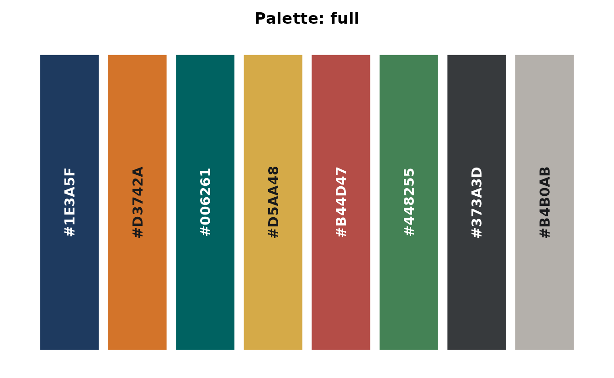
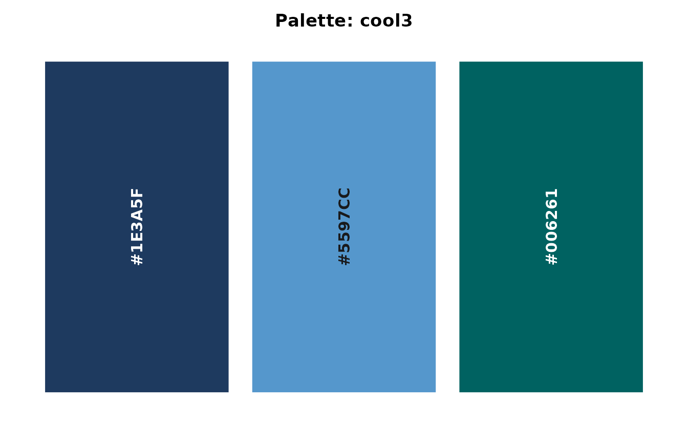
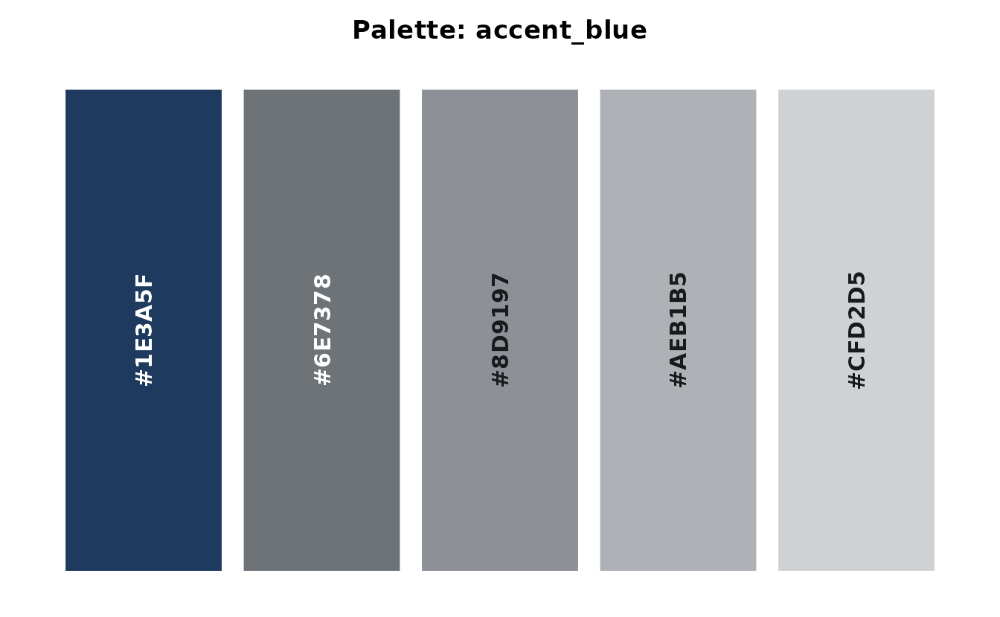
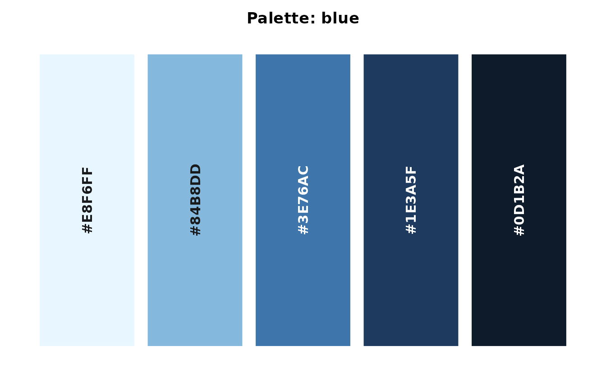
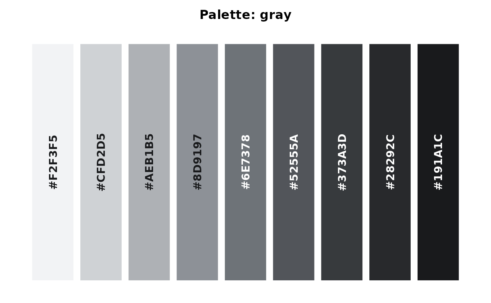
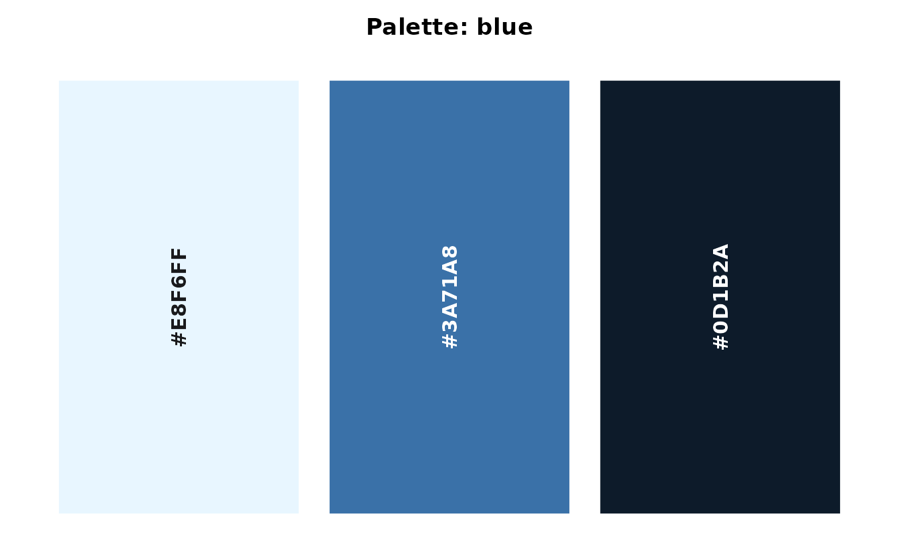

EKIO Theme
theme_ekio() applies EKIO’s visual identity to any
ggplot2 plot. It builds on theme_minimal() with curated
typography, spacing, and color choices.
ggplot(mtcars, aes(wt, mpg)) +
geom_point(color = ekio_pal("blue")["700"], size = 2.5) +
labs(
title = "Fuel Efficiency vs. Weight",
subtitle = "Motor Trend Car Road Tests (1974)",
x = "Weight (1000 lbs)",
y = "Miles per Gallon"
) +
theme_ekio()
The grid parameter controls which major grid lines are
drawn:
ggplot(mtcars, aes(wt, mpg)) +
geom_point(color = ekio_pal("blue")["700"]) +
theme_ekio(grid = "xy")
Color Palettes
ekioplot ships 21 palettes across five groups. Use
list_ekio_palettes() to explore them:
str(list_ekio_palettes())
#> List of 5
#> $ accent : chr [1:3] "gold" "accent_blue" "accent_orange"
#> $ categorical: chr [1:4] "full" "full_muted" "cool3" "cool4"
#> $ sequential : chr [1:7] "blue" "gray" "stone" "teal" ...
#> $ diverging : chr [1:3] "blue_orange" "blue_red" "teal_orange"
#> $ scientific : chr [1:4] "okabe_ito" "viridis" "inferno" "plasma"Access any palette with ekio_pal():
ekio_pal("full")
ekio_pal("cool3")
ekio_pal("accent_blue", n = 5)
ekio_pal("blue", n = 5)
Palette types
-
Categorical:
full,full_muted,cool3,cool4 -
Scientific:
okabe_ito,viridis,inferno,plasma -
Sequential:
blue,gray,stone,teal,green,orange,red -
Accent:
gold,accent_blue,accent_orange -
Diverging:
blue_orange,blue_red,teal_orange
accent_blue and accent_orange return four
colors by default. Set n from 2 to 6 to match the number of
series while retaining the accent as the first color. gold
remains a fixed three-color named palette.
ekio_pal() displays a swatch when printed:
ekio_pal("full")
Scale Functions
ekioplot provides ggplot2 scales for both discrete and continuous data.
Discrete scales
ggplot(mtcars, aes(wt, mpg, color = factor(cyl))) +
geom_point(size = 3) +
scale_color_ekio_d("full") +
labs(color = "Cylinders") +
theme_ekio(grid = "xy")
Continuous scales
Sequential and diverging palettes work with continuous data:
ggplot(mtcars, aes(wt, mpg, color = hp)) +
geom_point(size = 3) +
scale_color_ekio_c("blue") +
labs(color = "Horsepower") +
theme_ekio(grid = "xy")
Fill variants are available as scale_fill_ekio_d() and
scale_fill_ekio_c().
Recipe Functions
Recipe functions are high-level wrappers that create complete, publication-ready plots with smart defaults.

Bar plot
cyl_counts <- as.data.frame(table(cyl = mtcars$cyl))
names(cyl_counts)[2] <- "n"
ekio_barplot(cyl_counts, cyl, n)

Area plot
economic_series <- subset(
ggplot2::economics_long,
variable %in% c("pce", "psavert", "uempmed")
)
ekio_areaplot(economic_series, date, value01, fill = variable)
Smart aesthetic detection
Recipe functions automatically detect whether the color/fill argument is:
- Missing — uses EKIO blue as default
-
A color string (e.g.,
"steelblue") — uses that color directly - A variable — maps it and applies the appropriate EKIO scale
ekio_histogram(mtcars, mpg, fill = "coral")
Brand Scales
Every brand color is reached through ekio_pal(). The
seven brand scales — "blue", "gray",
"stone", "teal", "green",
"orange", and "red" — are nine-step ramps
running light to dark, named by shade. All seven sit on one lightness
spine, so a given shade carries the same visual weight in every
family:
ekio_pal("gray")
Position and shade are aligned by construction, so element
i is always shade i * 100. Index whichever way
reads better:
Because these are the same objects used for continuous fills, asking for fewer colors interpolates across the whole ramp rather than returning the lightest few:
ekio_pal("blue", n = 3)